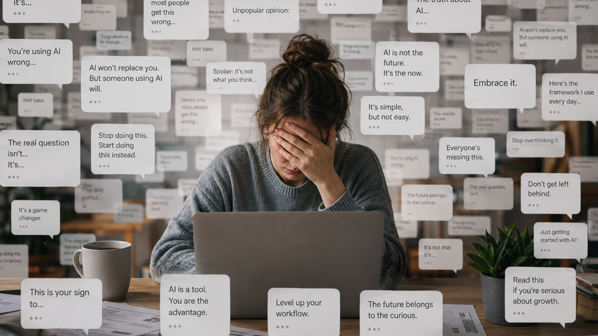

Image captionOverwhelmed woman at her desk, surrounded by a flood of generic AI opinions and hot takes in speech bubbles.
Image size: 1600 x 900 article header, 1200 x 630 social cropThe feeling
You can often feel it before you can prove it. A comment appears under a post. It is polite, balanced, vaguely encouraging. It says the thing is important, complex, worth discussing. It has the shape of participation without the weight of having participated.1
The same thing happens in articles. A paragraph arrives with the correct connective tissue: in today's landscape, it is important to remember, on the one hand, on the other hand. The rhythm is smooth. The substance wandered out of the room.
The internet gets worse when language sounds alive but has no witness behind it.
The pattern
The tell is the posture more than one sentence. Everything is framed as a balanced insight. Nothing is risked. A reply says "great point" and then repeats the post in softer clothes. An article introduces a topic, names a few obvious tensions, and exits before it has touched anything sharp.
That is why the phrase AI slop has stuck. It is crude, but useful.2 It points at output that is not merely machine-made, but socially low-effort: cheap images, filler text, synthetic engagement, content made to occupy the feed rather than to add something to it.3
Pretending people will stop using AI is not a serious answer. They will not, and often they should not. The better line is taste: use the tool, but leave a fingerprint. Bring a claim. Cut the padding. Name what you actually saw. If there is no observation, there is no post yet.
The Appeal
- AI makes writing cheaper. That makes real editorial judgment more valuable, not less.
- The good version is not human-only purity. It is human-directed clarity.
- The public will learn the smell of generic text. The interesting work will have to be more specific.
What to watch next
Watch platforms, not just writers. If distribution systems reward volume, slop wins by flooding the room. If ranking systems can recognize originality, source trails and actual human preference, the web gets a little more breathable again.